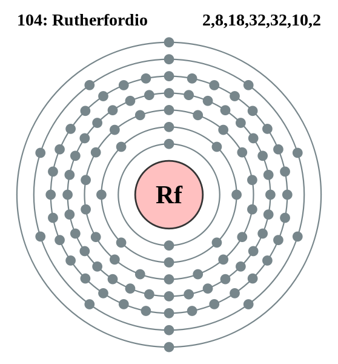

|
|
||
|
Rutherfordio Este elemento no tiene isótopos naturales ni estables. Aunque se han documentado 16 isótopos, la mayoría de ellos se desintegran mediante fisión espontánea. El rutherfordio es un metal de transición; su potencial de ionización, el radio atómico, las energías orbitales y los niveles básicos de estado ionizado son similares al hafnio y otros elementos del grupo cuatro. Como del circonio y el hafnio, del rutherfordio se espera que formen un óxido estable y reaccionen con halógenos para formar tetrahaluros volátiles. |
 |
DATOS Número Atómico: 104 Peso Atómico: Electronegatividad: Configuración Electrónica: [Rn]5f146d27s2 Estados de Oxidación: N/A No. de Electrones de Valencia: 4 |